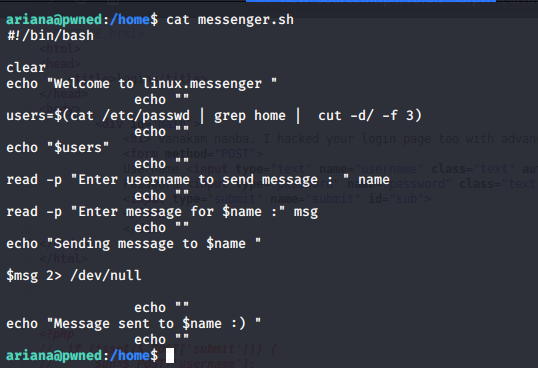

Port Scan

Directory Scan

Found secret.dic

Directory scan using secret.dic, found the pwned.vuln


View page source, found credentials ftpuser:B0ss_B!TcH

FTP login, found id_rsa and note.txt files
Found user ariana and her id_rsa

SSH Login, found user1.txt
Privesc to Selena (user2.txt)



Privesc to Root (docker)